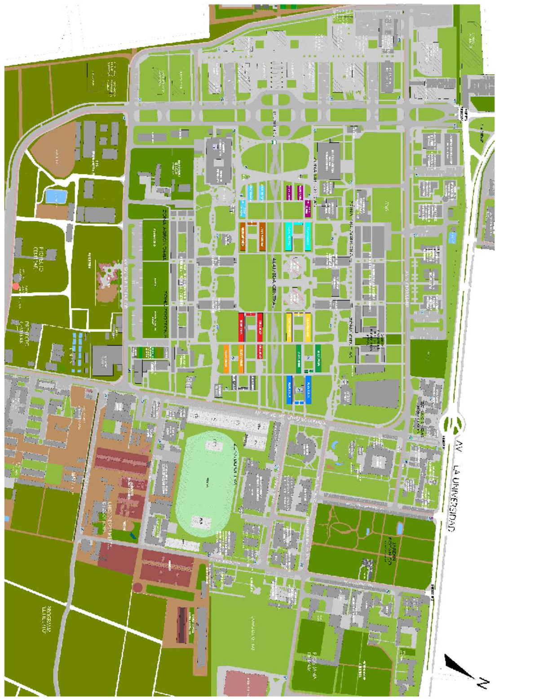
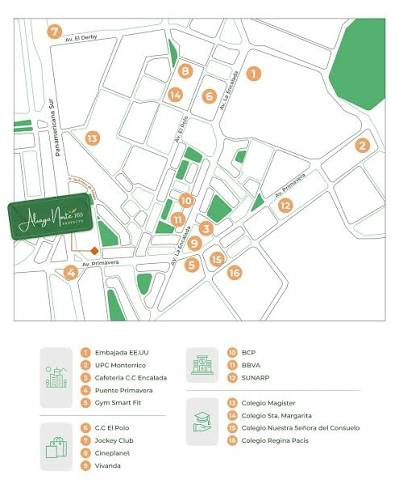

01 / UBICA
Ir al mapa de pisos
Consulta el mapa del piso
Selecciona el nivel donde te encuentras para identificar los tachos de papel, plástico, vidrio o RAEE más cercanos.
Red Universitaria de Reciclaje Inteligente
Encuentra en segundos la estación de reciclaje más cercana en cualquier piso de la universidad, acumula EcoPuntos por cada botella, papel o residuo electrónico entregado y canjéalos por beneficios estudiantiles.
Explorar mapa por pisos Ver recompensas disponiblesPlataforma académica vinculada al ODS 11 y ODS 12 · Simulación interactiva en HTML y CSS.


Campus Cero Residuos
En edificios universitarios de múltiples pisos, los estudiantes suelen descartar residuos en tachos comunes por desconocer dónde se ubica la isla de segregación más próxima.
UPCycle centraliza la ubicación exacta de los puntos ecológicos por nivel (desde el Sótano hasta el Piso 3) e incentiva el hábito mediante un sistema transparente de puntaje acumulativo.
Sistema Acumulativo
Selecciona el nivel donde te encuentras para identificar los tachos de papel, plástico, vidrio o RAEE más cercanos.
Escanea el código del punto ecológico e ingresa el código de estación en el formulario para sumar entre +15 y +50 EcoPuntos.
Acumula puntaje durante el ciclo académico y cámbialo por cafés, impresiones, libretas recicladas o horas de sala de estudio.
Mapeo Arquitectónico · Pabellón Central
Selecciona un nivel del edificio para visualizar la distribución de estaciones ecológicas y los tipos de residuos aceptados.
EcoPuntos UPCycle
360 EcoPuntos
Nivel actual: Embajador Verde II · Te faltan 140 pts para el Kit Universitario Sostenible.
Progreso hacia la meta máxima (500 EcoPts):
72% completado · ¡Ya puedes canjear cualquiera de las 3 primeras recompensas!
Canjeable en la cafetería del Piso 1 llevando tu propio termo reutilizable.
Crédito directo en tu cuenta institucional para impresiones en el Piso 3.
Cuaderno fabricado con papel 100% reciclado recolectado en el campus.
Botella de acero inoxidable oficial del programa Campus Sostenible.
“Antes botaba mis botellas en cualquier tacho entre clases. Ahora sé que en el Piso 2 tengo una estación a diez pasos y con mis puntos pago mis impresiones de la semana”.
— Estudiante de Ingeniería · Usuario de demostración UPCycle
Simulación de Operación
Completa el formulario seleccionando la estación del piso donde depositaste tus residuos para sumar puntos, o elige la recompensa que deseas reclamar con tu saldo actual.
Demostración académica sin almacenamiento en servidor. No ingreses contraseñas reales.